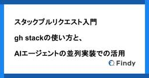
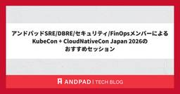
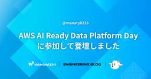
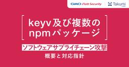
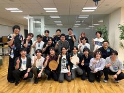
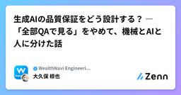
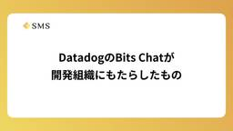

直近1週間の人気フィード
はてなブックマーク数を元に新着優先で並べ替え

テストが増えすぎてもう限界だったので、PRで全テストを回すのをやめた話 139
139 Timee Product Team Blog
Timee Product Team Blog
はじめに こんにちは、タイミーのプラットフォームエンジニアリングチームに所属している徳富(@yannKazu1)です。 この記事では、スキマバイトサービス「タイミー」のバックエンド（Rails API）に Datadog Test Impact Analysis（TIA） を導入し、PRごとのCIフィードバックを大幅に高速化した取り組みについて紹介します。 なお、バックエンドはRailsアプリケーションなので、テストフレームワークは RSpec を前提として話を進めます。 サービスが成長してプロダクトの機能が増えてくると、テストも当然増えていきますよね。開発者が増えればPRの数も増え、CIの待…
1日前

LLM Wikiパターンの標準化 OKF(Open Knowledge Format) 136 Finatext Tech Blogのフィード
Finatext Tech Blogのフィード
Open Knowledge Format（OKF）— LLM Wikiパターンの標準化ナウキャストで長期LLMインターンをしている北川です。LLM系のタスクのキャッチアップをする中で、最近「OKF」という技術を耳にする機会が増えました。OKFはまだ登場したばかりの仕様で、その概念を理解するにはRAGやLLM wikiといった周辺技術への理解が欠かせません。しかし、OKF関連の記事の多くはOKF単体の説明にとどまっており、それだけでは体系的に理解しづらいと感じています。OKFはこうした周辺技術を前提として設計された概念でもあるため、それらへの理解があって初めて実感を持って捉えられ...
3日前

仕様駆動開発、導入半年。「本当に速くなってるの?」にデータで答える 76 RAKUS Developers Blog | ラクス エンジニアブログ
RAKUS Developers Blog | ラクス エンジニアブログ
こんにちは、ラクス技術広報です。 2026年7月15日、主催イベント「RAKUS AI Conference 2026 Summer」を開催しました。本記事では、楽楽精算 開発3課の平川裕多さんが発表した「仕様駆動開発、導入半年。『本当に速くなってるの?』にデータで答える」について、技術広報がレポート記事でご紹介します。 この記事はこのような方におすすめです AI活用で実装は速くなった気がするのに、なぜか設計やレビューの負荷が増えていると感じているエンジニアの方 仕様駆動開発(SDD)の導入を検討している、あるいは導入したものの効果を数字で説明できずに悩んでいる方 「AIネイティブな開発」を、…
1日前

エンジニアよ、商談に出よう 251 Repro Tech Blog
Repro Tech Blog
Reproでエンジニアをしている下村です。 自分はずっとプログラマとしてやってきました。最近はPdM的な動きも増えましたが、今でも機能の設計をして、コードを書いて、レビューもする、いわゆる現場のエンジニアです。 そんな自分が、この1年ほど「商談」に出るようになりました。Reproの導入を検討されているお客さんとの打ち合わせに、開発側の人間として同席する、あれです。最初は「エンジニアが商談に?」と自分でも思っていたのですが、実際に出てみると、これがエンジニアにとってかなり価値のある体験でした。この記事では、なぜ今エンジニアが商談に出る意味があるのか、そして出てみて何を得たのかを書いていきます。 …
5日前

自然言語だけでKibanaダッシュボードを作成！Elastic DashBuilder MCP Appを試してみた 26 Taste of Tech Topics
Taste of Tech Topics
こんにちは、ノムラです。今回は、自然言語で Kibana ダッシュボードを作成できる Elastic Dashbuilder MCP App を試してみます。はじめに 1. Elastic Dashbuilder MCP Appとは 2. 検証環境 3. サンプルデータの準備 4. 自然言語でダッシュボードを作成 5. 生成されたダッシュボードの確認 まとめ はじめに Kibana のダッシュボードは、Elasticsearch に蓄積されたデータを可視化するうえで非常に便利です。 一方で、慣れていない場合は最初の一歩に少し時間がかかります。そこで本記事では、Kibana のサンプルデータを利…
2日前

スタックプルリクエスト入門 — gh stackの使い方と、AIエージェントの並列実装での活用 69 Findy Tech Blog
Findy Tech Blog
こんにちは。ファインディ株式会社でプリンシパルエンジニアをしている戸田です。 先日、GitHubのスタックプルリクエスト（Stacked Pull Requests）がpublic previewになりました。依存し合う変更を複数のプルリクエストに分けたまま、順番に積み上げてレビュー・マージできる機能です。 この記事では、スタックプルリクエストの仕組みとgh stackでのプルリクエストの積み方、GitHubの画面でのレビューとマージの流れを紹介します。最後に、ファインディでAIエージェントの並列実装に組み込んでいる例にも触れます。 スタックプルリクエストの仕組み gh stackでプルリクエ…
4日前
「NoじゃなきゃGo」で加速する、サンフランシスコ流プロトタイプ開発 34 ぐるなびをちょっと良くするエンジニアブログ
ぐるなびをちょっと良くするエンジニアブログ
こんにちは、ぐるなびでディレクターグループに所属している林です。 先日、2週間ほどサンフランシスコに滞在し、現地のプロダクトやアプリの調査、スタートアップの見学などを行う機会がありました。 この記事では、業務の記録そのものよりも「現地で何を感じ、自分の仕事の進め方をどう変えようと思ったか」を中心に書いています。
3日前

アンドパッドSRE/DBRE/セキュリティ/FinOpsメンバーによるKubeCon + CloudNativeCon Japan 2026のおすすめセッション 17 ANDPAD Tech Blog
ANDPAD Tech Blog
こんにちは。アンドパッドのDBREの久保です。 events.linuxfoundation.org 昨年に続き、KubeCon + CloudNativeCon Japan 2026が今年も開催されました！アンドパッドからは、SREチームの谷合、DBREチームの久保、FinOpsチームの吉澤、セキュリティチームの宜野座が参加しました。 今回は、現地参加したメンバーそれぞれの視点から、おすすめセッションをご紹介します。SRE、DBRE、FinOps、セキュリティと、担当領域の異なるメンバーが選んだセッションなので、幅広いテーマをカバーできているのではないかと思います。これから発表資料や動画で、…
2日前

シニアエンジニア目線をAIレビューへ 〜 判断を移植した社内エージェント「Makasetaro」の設計 57 MonotaRO Tech Blog
MonotaRO Tech Blog
はじめに ここ最近で、AIの急速な進歩を背景にAIコーディングツールの利用は一気に広がりました。MonotaROでもClaude Code、Cursor、Codex、Devinといったツールを日々の開発に取り入れて積極的に活用しています。 ただ、コードを書くことにおいて開発者一人あたりの生産性が向上した一方で、AI支援によるPRの増加と、それをレビューするシニアエンジニアの疲弊が顕在化してきました。 若手に仕様理解を深めてもらおう、と渡したタスクが半日後にはPRになってレビュー依頼されてくる。そんなのはもはや当たり前です。コメントやテストも書かれた一見もっともらしいPRを人間の目でレビューする…
4日前

問題テキストからの難易度推定のアルゴリズム解説 23 ドワンゴ教育サービス開発者ブログ
ドワンゴ教育サービス開発者ブログ
EDMや人工知能学会で発表した、問題テキストから難易度などのIRTパラメータの推定アルゴリズムについて解説します。EdTechや自然言語処理に興味ある方はぜひ。
3日前

アーキテクチャに限らず意思決定を全部残す「ADR（Any Decision Record）」という文化 166 DRESS CODE TECH BLOGのフィード
はじめにDress Code 株式会社のかわうそです。Dress Code では創業初期から ADR を書き続けているのですが、一般的な ADR とは少し違う運用をしています。頭文字の "A" を Architecture ではなく Any と読み替えて、「領域も大小も問わず、あらゆる意思決定を全部残す」という文化として回しています。この取り組みは以前イベントでも登壇して話しました。https://speakerdeck.com/kawauso/dokiyumentohaainowei-fang-sutatoatupunoaziyairuwojia-su-suruadr社外...
6日前

タイムボクシングのすすめ 38 TOKIUMプロダクトチーム テックブログのフィード
株式会社TOKIUMでエンジニアをしているあのです。今年の3月から、開発チームのリーダーとして業務しています。私のチームは、会計ソフトへ連携するためのフォーマットをお客様ごとにカスタマイズしています。そのため他の開発チームに比べて、「この仕様は実装できるか」「今はどういう実装になっているか」といった相談や確認が、チームの外から入ってきやすい立ち位置にあります。リーダーになってからというもの、自分の1日の過ごし方が変わりました。自分で手を動かす時間よりも、レビュー、相談、確認の依頼がどんどん入ってきます。会議も増えました。気づくと一日が終わっていて、自分が進めるはずだった仕事は何も...
4日前

AWS AI Ready Data Platform Day Tokyoに参加して登壇しました 19 カミナシ エンジニアブログ
カミナシ エンジニアブログ
カミナシのID管理基盤を開発しているmanaty（@manaty226）です。カミナシ ID管理基盤におけるログストレージへのAmazon S3 Tables（以下、S3 Tables）利用について、7月28日に行われたAWS AI Ready Data Platform Dayで発表しました。一日を通して非常に学びになるイベントだったので共有したいと思います。
3日前

散らばった議論を LLM-Wiki でフル活用する AI 時代のデザインシステムのカタチ 35 サイボウズ フロントエンドのフィード
!この記事は、CYBOZU SUMMER BLOG FES '26の記事です。筆者が携わる kDS (kintone Design System) Team は、kintone、Slack、GitHub、Confluence など、さまざまな場所にデザインの議論を蓄積してきました。しかし、情報が分散し、蓄積されるにつれ、過去の意思決定を探す作業はかなりメンバーの記憶に依存していました。そこで、散らばった議論を LLM-Wiki に取り込み、根拠付きで検索できる仕組みを取り入れました。この記事では、デザインシステムに LLM-Wiki を取り入れて得られた効果と、チームで運用するた...
4日前

楽楽精算AIエージェントを支える、LLMOpsとインフラの選択肢 34 RAKUS Developers Blog | ラクス エンジニアブログ
こんにちは、ラクス技術広報です。 2026年7月15日に開催した主催イベント、「RAKUS AI Conference 2026 Summer」の5本のセッションのうち3本目に登壇したのが、AIエージェント開発課の竹田舜さんです。 テーマは「PoCから本番へ―楽楽精算AIエージェントを支える、LLMOpsとインフラの選択肢」。 CTOや役員による組織戦略の話に続き、現場のエンジニアが実際に何を判断してきたのかという、解像度の高い知見が語られたセッションでした。竹田さんが語ったのは、「AI専用の特殊なものというよりは、慣れているもの、知見のあるものを優先して素早く構築しました」という意思決定です…
3日前

Go 1.27の go fix アップデート 17 フューチャー技術ブログ
フューチャー技術ブログ
<img fetchpriority="high" src="/images/2026/20260807a/top.jpg" alt="" width="512" height="286"><p>The Go gopher was designed by Renee
2日前

CloudFront VPC Origins障害とトレードオフに向き合うためのアンドパッドの答え 14 ANDPAD Tech Blog
こんにちは。 サービスプラットフォーム部 SRE チームの谷合です。普段はメガネ集めと、キャンプギア収集、毎日のビールを楽しみながら生きています。 先日Amazon CloudFrontのVPC Originsで障害が発生しました。 Anatomy of the CloudFront VPC Origins Outage: When Going Private Becomes Your Single Point of Failure builder.aws.com CloudFront自体は正常に動作していましたが、今回の事象では VPC Origins という特定機能のみで障害が発生して、5…
3日前
herdr を使いこなす: 複数 AI エージェントの連携から自作プラグインまで 102 TECHSCORE BLOG
TECHSCORE BLOG
herdr の基本操作から、複数 AI エージェントの連携・自動化・セッション永続化まで実例で紹介します。足りない機能をプラグインで自作する方法も扱います。
6日前

keyv 等 複数著名パッケージへのソフトウェアサプライチェーン攻撃の概要と対応指針
54 GMO Flatt Security Blog
GMO Flatt Security Blog
2026年8月4日、npm ユーザー jaredwray が管理に関与する、複数の npm パッケージに悪性コードが注入されました。 一部は週間で一億回以上ダウンロードされている、広く利用されているパッケージです。 注入された悪性コードは Infostealer 型マルウェアです。Lifecycle script 経由で開発者のもつ認証情報を盗み出し、C2 へ送出します。 また、環境に存在するトークンによっては、他 npm パッケージに悪性コードを植え付け侵害するワーム性も持ちます。 本記事は、弊社が Takumi Guard の解析基盤をベースに観測＆分析した情報を踏まえ、 日本のコミュニテ…
4日前

SmartHR最大のRailsアプリケーションにコネクションプーラーを導入しました！── 2年前の障害対応から学んだスケーラビリティと運用のリアル 33 SmartHR Tech Blog
SmartHR Tech Blog
こんにちは。スケーラビリティエンジニアリングユニットの @kawaida です。 最近、トークンマキシングならぬポケモンマキシングをして、ぽこあポケモンの図鑑コンプしました。（時が過ぎるのははやい） ２年前には「基本機能」と呼ばれる SmartHR 最大の Rails アプリケーションに、コネクションプーラーを導入しました。 この記事では、導入にあたって検討した技術的な背景や選定理由をご紹介します。 背景 SmartHR の「基本機能」では Cloud Run を使用しており、リクエスト数や負荷の増加によってオートスケールします。 サービスの成長に伴ってトラフィックが増えると、スケールアウトし…
5日前

times批判は根本的に正しい。ではなぜ当社の「times文化」が壊れないのか 3 CloudNative BLOGs
CloudNative BLOGs
X上で燃えた「timesにお気持ちを書くな」論争。批判は正しいのにも関わらず、創業時から稼働しているtimes文化が壊れないクラウドネイティブの構造を、Slackアナリティクスの実数とAI日次レポートの運用実態から分析します。
1日前

Node.js の HTTP server を優雅にシャットダウンする方法 5 Wantedly Engineer Blog
Wantedly Engineer Blog
この記事で話すこと優雅なシャットダウンとは終了前にリソースを安全に解放することであり、 HTTP サーバーではリク...
3日前
kintone フロントエンド技術標準ってなに？ 23 Cybozu Inside Out | サイボウズエンジニアのブログ
Cybozu Inside Out | サイボウズエンジニアのブログ
この記事は、CYBOZU SUMMER BLOG FES '26の記事です。 kintone フロントエンド開発に "技術標準" ができていました どうも、kintone フロントエンドイネイブリングチームの mugi です。 突然ですが表題の通り、kintone でのプロダクト開発では、 kintone フロントエンド技術標準 というものが存在します。 kintoneフロントエンド技術標準トップページ この記事では、 "技術標準" とは一体なんなのか・何のために作られたのか、などをご紹介します。 領域に閉じたフロントエンド開発と技術選定 kintone のプロダクト開発では、機能や目的などに…
5日前

AI Slop 疲れを減らす「仕上げ度」ラベル運用の提案 32
 TechRacho
TechRacho
※この文書は[仕上げ度: L2 人間レビュー済み — 作成者による全文確認済み] です。AIのアシストを受けて執筆しましたが、内容については全て作成者による確認済みです morimorihogeです。急に暑くなってきました。溶ける。 業務でフルAI活用しまくるようになって1年以上が経過したということで、AI Slop（見た目は整っているが質の低いAI生成コンテンツの氾濫）と、それに振り回される「AI Slop 疲れ」への対策に関する提案をまとめてみました。 直近みんな困ってる問題だと思いますので、興味のある方はぜひ読んでみてください。 AIに書かせた文書を送られてイラっとしたこと、ありませんか？ こんな経験はない […]The post AI Slop 疲れを減らす「仕上げ度」ラベル運用の提案 first appeared on TechRacho.
5日前

Web 標準動向 2026年7月版 32
サイボウズ フロントエンドのフィード
こんにちは！ サイボウズ株式会社 フロントエンドエンジニアの mehm8128 (@mehm8128) です。 はじめにサイボウズは 2025 年 4 月より、W3C のメンバーに加入しました。https://blog.cybozu.io/entry/joining-w3c標準化プロセスに関わることができるようになるための最初の一歩として、フロントエンドエンジニアの一部のメンバーは積極的に Web 標準のキャッチアップを行っています。そこで、毎月メンバーが興味を持った Web 標準に関する話題や、実際に標準化プロセスに関わることができた場合にはその報告などを 1 つの記事とし...
5日前

Go 1.27リリース連載：ポスト量子暗号 8 フューチャー技術ブログ
<img fetchpriority="high" src="/images/2026/20260806a/top.jpg" alt="" width="720" height="402"><p>The Go gopher was designed by Renee
3日前

AIは、中身で止める 29 Linkode.TechBlog
Linkode.TechBlog
止めすぎない統制のつくり方 シリーズ「AIが作る時代のセキュア設計」第3回 前回までのお話 このシリーズでは、AI が自発的にしてくれるセキュリティ上の注意は揺らぐこと（第1回1）、だから組織の設定で AI の機能を禁止すれば、その機能を使った社外への持ち出し（越境）を個人の注意に頼らず止められること（第2回2）を確かめてきました。ただし、禁止の規則が見ているのは「どの機能か」であって「中身が問題かどうか」ではない。だから機能ごと止めれば、越境と一緒に、非エンジニアがようやく手にした「自分で業務を良くする力」まで巻き添えで消えてしまう。この限界を前に、前回は「AI を安全な囲いの中で走らせる」…
5日前

エンジニアの仕事は、プロトタイプを99本捨てられる環境を作ること — Figma Config 2026 現地参加レポート 25 Tabelog Tech Blog
Tabelog Tech Blog
はじめに 本記事のTL;DR（要約） Figma Config 2026とは 前夜祭の様子 Opening keynote - Dylan Field（CEO & Co-founder, Figma） AIは床を下げる。天井を上げるのは人間 品質は、Noと言った数で測られる Google Design Engineer Lead Andy Zhang 「Designing in the age of the 10x engineer」 AIエージェントによる開発プロセスの「逆転」 Bitovi CEO Justin Meyer 「AI will upend your process—for t…
5日前
見守りパンダ降臨 ── Takumi Guardを全社展開 21 ZOZO TECH BLOG
ZOZO TECH BLOG
はじめに こんにちは、情報セキュリティ部の兵藤です。日々ZOZOの安全を守るためSOC業務に取り組んでいます。 本記事では、開発環境におけるサプライチェーン対策として、Takumi Guardを全社展開した事例について紹介します。 また、情報セキュリティ部ではその他にもZOZOを守るための取り組みを行っています。詳細については以下の「Claude CodeがSOC業務を全自動でやってくれるってさ」をご覧ください。 techblog.zozo.com
6日前

Agentic Engineering時代における「作り上げる力」を鍛える！2026年度新卒エンジニア研修を実施しました 11 Pepabo Tech Portal
Pepabo Tech Portal
はじめに新卒エンジニア研修を担当しました、ugo、yukyan、てつを、どすこい、haruotsuです！2026年度も新たな新卒エンジニアを迎え、講師陣一同で研修を実施しました。本記事では、各研修を設計・実施した講師陣が、カリキュラムの設計意図や工夫、実施の様子を紹介します。新卒エンジニア研修の設計に携わる方々の参考になれば幸いです。ぜひ最後までご覧ください。はじめに2026年度新卒エンジニア研修概要Webアプリケーション研修(バックエンド)フロントエンド研修モデリング/設計研修インフラ/仮想化研修SRE研修 障害対応100本ノックの概要設計意図効果セキュリティ研修 セキュリティレビュー体験脆弱性診断の体験機械学習＆データエンジニアリング研修おわりに2026年度新卒エンジニア研修概要今年の新卒エンジニア研修は「Agentic Engineering時代における作り上げる力」をテーマに、次の3つを目的として設計しました。自分が何を知らないかを知り、自律的に学び続けられる状態になる配属後すぐに事業インパクトを出せる助走をつけるAIを前提とした技術選定・判断・実装ができ、顧客体験まで考えられ
4日前

Go 1.27の構造体リテラルのキー拡張で、埋め込みフィールドの初期化が楽になった 6 フューチャー技術ブログ
<img fetchpriority="high" src="/images/2026/20260805a/54ec55c6-cfaa-4442-b5cc-5456e49e5e03.jpg" alt="" width="1024" height="572"><p>The
4日前

生成AIの品質保証をどう設計する？ ― 「全部QAで見る」をやめて、機械とAIと人に分けた話 5 WealthNavi Engineering Blogのフィード
はじめに初めまして、ウェルスナビでQAを担当しています大久保です。ハルシネーションまみれのAIから数年、最近はAIの進化の速度に驚かされる日々を送っています。本記事では、AI事業者ガイドラインを起点に生成AIを組み込んだ機能のテスト観点を作り、PoCで直面した課題をもとに、品質保証のプロセスを組み直した過程を紹介します。生成AIの品質保証と言われた時に、QAではどんなテストをすれば良いでしょうか。私たちは最初、PoCで考えられるAIリスクを洗い出し、それをすべてQAで確認しました。その中で、確認工数だけでなく判定基準やリリース判断との結びつきにも課題が見えてきました。...
5日前

【Expert Cross #3・前編】ソフト・ハードの両面から「話せる」エンジニアの流儀 GMOサイバーセキュリティ byイエラエ・三村聡志が語る、「伝えることで世界を良くする」エキスパートの在り方 7 GMO Developers
GMO Developers
「話せるエンジニア」として、情報発信から教育までを幅広く行う 三村聡志（みむら さとし）｜GMOサイバーセキュリティ byイエラエ株式会社 小池 悠生（こいけ ゆうき）｜GMOサイバーセキュリティ byイエラエ株式会社 […]
6日前

人と人の「認識のずれ」をAIが埋めるチケット管理 ── Notion Custom Agents + External Agents の実践 4 LayerX エンジニアブログ
LayerX エンジニアブログ
はじめに こんにちは。LayerXのバクラク事業部でソフトウェアエンジニアをしているTomoakiです。最近3Dプリンターを買ったことにより創作意欲が最高潮に達しています。 さて、2026年に入ってから、NotionからAgent関連の機能リリースがいくつかありました。この記事では、私たちのチームが開発チケット管理をNotionで構築し直した例を中心に、実際に運用してみた所感やtipsを紹介したいと思います。 「Notion使ってるけどAgent機能はあまり使えてない」、「チケット管理とcoding agentの連携がイマイチ運用に乗らなくて悩んでいる」と思っている方の参考になれば嬉しいです。…
4日前

[社内勉強会資料公開] Claude Code 入門 #4 — permissions・hooks・devcontainerで安全に使う 4 株式会社サイバーセキュリティクラウド テックブログのフィード
こんにちは、CSC の CloudFastener というプロダクトで TAM のポジションで働いている平木です！CSC社内で開催している「CloudFastener の TAM(テクニカルアカウントマネージャー)向けに、Claude Codeを初歩から実践まで学ぶ勉強会」の第4回資料です。前回はCLAUDE.mdを使って、Claude Codeを自分の業務仕様にカスタマイズする方法を扱いました。https://zenn.dev/cscloud_blog/articles/csc-claude-code-study-session-03第4回は、Claude Codeを安全に運用す...
5日前
【Expert cross #3・後編】組織と業界を動かすエキスパートへ GMOサイバーセキュリティ byイエラエ・三村聡志が描く、「安全なロボット」を実現する世界 5 GMO Developers
現場に立って気づいた「本当の課題」 ———エキスパートとして活動するなかで、ご自身に変化はありましたか。 ———小池さんから見て、三村さんの存在は組織にどんな影響を与えていますか。 ———広報や発信の面では、三村さんにど […]
6日前

AI時代の新卒だけど、コードを読むことにした 3 every Tech Blog
every Tech Blog
Claude Codeで既存システムに機能を追加していたら、作るはずの機能がすでにありました。AIの出力を検証する判断軸をどう作るか、DDを自分の手で書きコードを自分で追うようにした実践を、新卒エンジニアがまとめました。
5日前

DatadogのBits Chatが開発組織にもたらしたもの 3 エス・エム・エス エンジニア テックブログ
エス・エム・エス エンジニア テックブログ
こんにちは、エス・エム・エスでカイポケコネクトのエンジニアをしている加我 (@TAKA_0411) です。 私事ではありますが、日本のDatadogコミュニティの活動や社外での登壇の実績を評価されまして、2026年度の Datadog Ambassadors に選出いただきました。 もともと好きが高じて続けてきた活動ではありますが、それらがオフィシャルに評価されたというのは感慨深いものです。今後も積極的なDatadog活用や知見の共有、仲間集めのためのコミュニティ運営を続けていきます。 そういえば、3月に開催されたJAWS DAYS 2026では私も登壇者・ブース担当者として参加していたのです…
5日前

ウォンテッドリーの開発組織が実践する、全員参加型の品質保証研修 ─ QAとエンジニアの協働プロセス 4 Wantedly Engineer Blog
はじめにこんにちは、QAエンジニアの青柳です。ウォンテッドリーの開発組織が最も大切にしているのは、「ユーザーの課題...
5日前